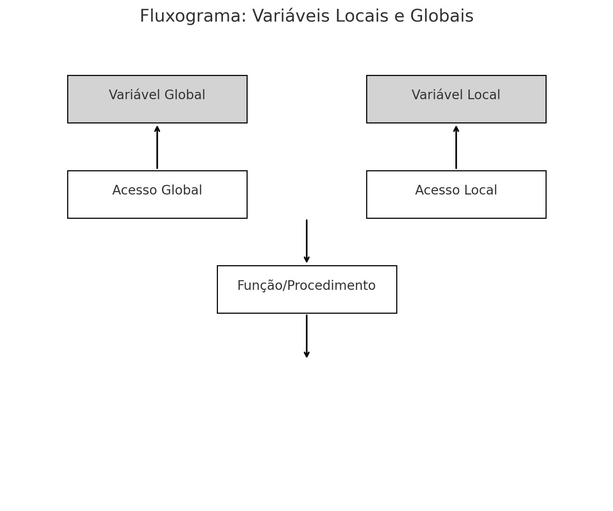
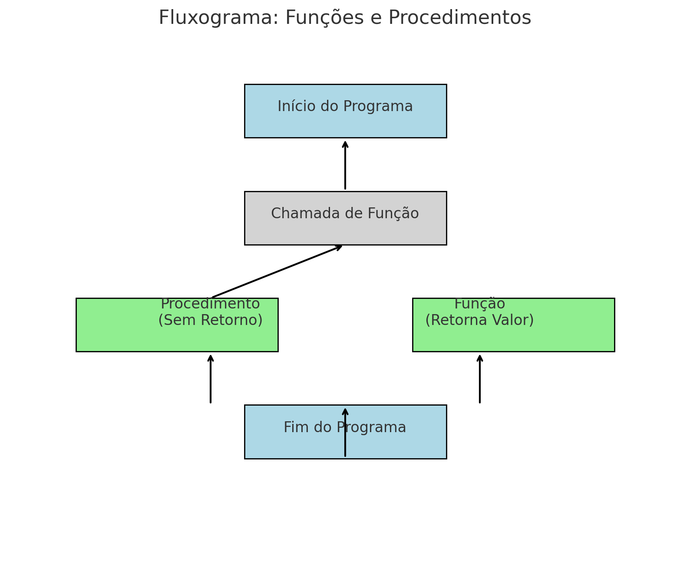

Variáveis Locais e Globais
As variáveis locais e globais são usadas para armazenar dados em diferentes escopos. Variáveis globais são acessíveis em todo o programa, enquanto variáveis locais são acessíveis apenas dentro do escopo onde foram declaradas.
Exemplo em Visualg
algoritmo "ExemploVariaveis"
var
global x: inteiro // Declaração de uma variável global
procedimento Exemplo()
var
local y: inteiro // Declaração de uma variável local
inicio
x := 10 // Atribuição de valor à variável global
y := 20 // Atribuição de valor à variável local
escreva("x: ", x, " y: ", y) // Exibe os valores de x e y
fimalgoritmo
Exemplo em Python
x = 10 # Variável global
def exemplo():
y = 20 # Variável local
print("x:", x, "y:", y) # Exibe os valores de x (global) e y (local)
exemplo() # Chama a função exemplo
Exemplo em Java
public class ExemploVariaveis {
static int x = 10; // Variável global
public static void exemplo() {
int y = 20; // Variável local
System.out.println("x: " + x + " y: " + y); // Exibe x (global) e y (local)
}
public static void main(String[] args) {
exemplo(); // Chama o método exemplo
}
}
Exemplo em C
#include <stdio.h>
int x = 10; // Variável global
void exemplo() {
int y = 20; // Variável local
printf("x: %d y: %d\n", x, y); // Exibe x (global) e y (local)
}
int main() {
exemplo(); // Chama a função exemplo
return 0;
}
Fluxograma: Variáveis Locais e Globais
Funções e Procedimentos
Funções e procedimentos são blocos de código reutilizáveis. Funções retornam um valor após a execução, enquanto procedimentos executam operações sem retornar valores.
Exemplo em Visualg
algoritmo "FuncoesEProcedimentos"
var
a, b, soma: inteiro
// Função que recebe dois inteiros e retorna a soma
funcao somar(x: inteiro, y: inteiro): inteiro
inicio
somar := x + y // Retorna a soma de x e y
fimfuncao
// Procedimento que recebe um inteiro e exibe o valor
procedimento mostrarResultado(resultado: inteiro)
inicio
escreva("Resultado: ", resultado) // Exibe o resultado
fimalgoritmo
Exemplo em Python
def somar(x, y):
return x + y # Retorna a soma de x e y
def mostrar_resultado(resultado):
print("Resultado:", resultado) # Exibe o resultado
a = 5
b = 10
resultado = somar(a, b) # Chama a função somar e armazena o resultado
mostrar_resultado(resultado) # Chama o procedimento para exibir o resultado
Exemplo em Java
public class FuncoesEProcedimentos {
// Função que recebe dois inteiros e retorna a soma
public static int somar(int x, int y) {
return x + y; // Retorna a soma de x e y
}
// Procedimento que recebe um inteiro e exibe o valor
public static void mostrarResultado(int resultado) {
System.out.println("Resultado: " + resultado); // Exibe o resultado
}
public static void main(String[] args) {
int a = 5;
int b = 10;
int resultado = somar(a, b); // Chama a função somar
mostrarResultado(resultado); // Chama o procedimento para exibir o resultado
}
}
Exemplo em C
#include <stdio.h>
// Função que recebe dois inteiros e retorna a soma
int somar(int x, int y) {
return x + y; // Retorna a soma de x e y
}
// Procedimento que recebe um inteiro e exibe o valor
void mostrarResultado(int resultado) {
printf("Resultado: %d\n", resultado); // Exibe o resultado
}
int main() {
int a = 5;
int b = 10;
int resultado = somar(a, b); // Chama a função somar
mostrarResultado(resultado); // Chama o procedimento para exibir o resultado
return 0;
}
Fluxograma: Funções e Procedimentos
Resumo e Exercícios
Funções e procedimentos são fundamentais para organizar e modularizar o código, melhorando a legibilidade e a reutilização de componentes. Variáveis locais e globais desempenham um papel crucial na definição de escopo e acessibilidade de dados dentro de um programa.
Exercícios Propostos
- Crie um algoritmo em Visualg que utilize uma função e um procedimento.
- Implemente em Python, Java e C um programa que utilize variáveis locais e globais, funções e procedimentos.